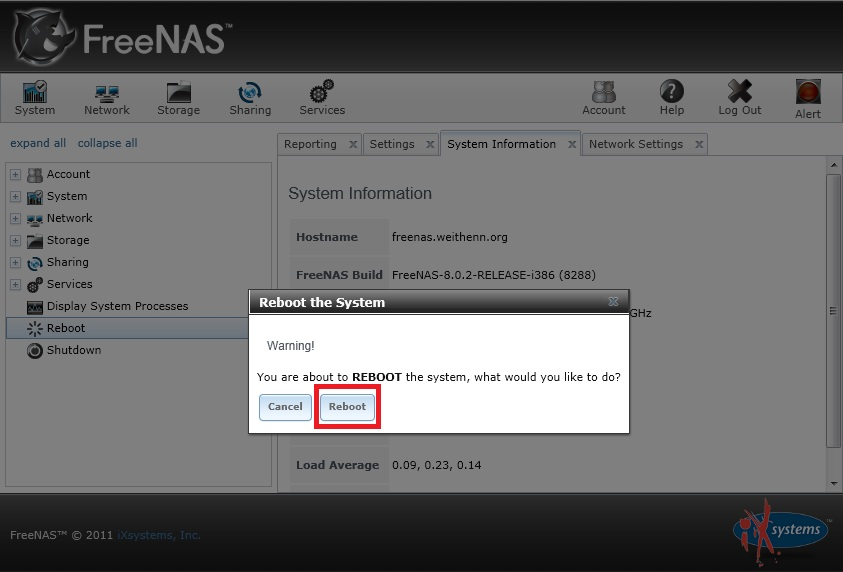

也紀念我們永遠的朋友 李士傑先生（Shih-Chieh Ilya Li）。
利用 FreeNAS 打造儲存設備 (7)─Failover（故障轉移）
前言
本文將實作建立 lagg 虛擬網路介面，以達到 FreeNAS 主機網路發生故障時的轉移功能，並且分別解說由 Console 或由 GUI 圖形介面進行的修改方式，設定完成後會進行 Lagg 故障轉移機制測試。
實作環境
- 作業系統：FreeNAS-8.0.2-RELEASE（32 位元版本）
- 網路卡：em0、em1
- 區域網路 IP 網段：10.10.75.0 / 255.255.255.0
- Default Gateway：10.10.75.254
Lagg 虛擬網路卡
Lagg 是將 FreeNAS 主機上多片實體網路卡群組之後所產生的一片虛擬網路卡，它可以讓實體網路卡具備故障轉移 (Failover)，以及頻寬合併 (LACP、FEC) 或流量均衡負載 (Loadbalance, Round-robin) 的能力，若設定為 None 模式則會禁止任何網路流量，但不會禁止 lagg 介面的建立。
Console 設定 Lagg 故障轉移功能
要設定 FreeNAS 主機 Lagg 故障轉移功能以前，請先將網卡上的網路線拔除，以避免主機一開機就尋找區網內 DHCP Server 干擾設定。Console 介面手動設定固定 IP 位址的步驟如下：
01. 輸入「2」進入「Configure Link Aggregation」：設定 Lagg 故障轉移功能
- Select a lagg protocol (q to quit)：顯示 Lagg 故障轉移功能支援的六種模式(failover, fec, lacp, loadbalance, roundrobin, none)，輸入「1」選擇「failover」機制。
- Select an interface (q to quit)：顯示於開機流程中偵測到的網路卡清單，請選擇要加入 Lagg 功能的實體網路卡編號，此例輸入「1」先選擇「em0」網卡，再次選擇「1」選擇「em1」網卡，選取二片網卡後輸入「q」離開。
- 回到 Console 畫面後，選擇「10」重新啟動 FreeNAS 主機。
02. 輸入「1」 進入「Configure Network Interfaces」：設定網卡 IP 位址
- Select an interface (q to quit)：請選擇要設定固定 IP 位址的實體網路卡編號，輸入「1」選擇剛才建立的「lagg0」網路卡。
- Delete existing config? (y/n)：是否要刪除已經存在的 IP 位址設定內容，輸入「n」表示 No。
- Configure Interface for DHCP? (y/n)：是否要啟用此網路卡的 DHCP Client 功能，輸入「n」表示 No。
- Configure IPv4? (y/n)：是否要設定此網路卡的 IPv4 位址資訊，輸入「y」表示 Yes。
- Interface name [lagg0]：您可以輸入此網路卡的別名，若直接按下 Enter 則套用網路卡編號 lagg0。
- IPv4 Address：請輸入 IPv4 位址格式，其中網路遮罩設定支援 Subnet mask 表示方式 255.255.255.0 以及 CIDR 表示方式 /24，輸入「10.10.75.10/24」設定固定 IP 位址。
- Configure IPv6? (y/n)：是否要設定此網路卡的 IPv6 位址資訊，輸入「n」表示 No。
- Restarting network ok：設定完成後 FreeNAS 會重新啟動網路服務，並回到 Console 畫面。
03. 輸入「4」進入「Configure Default Route」：設定主機預設閘道 IP 位址
- Configure IPv4 Default Route? (y/n)：是否設定 IPv4 預設閘道資訊，輸入「y」表示 Yes。
- IPv4 Default Route：請輸入區域網路中預設閘道的 IP 位址，輸入「10.10.75.254」。
- Configure Ipv6 Default Route? (y/n)：是否設定 Ipv6 預設閘道資訊，輸入「n」表示 No。
- Restarting routing ok：設定完成後 FreeNAS 會重新啟動路由服務，並回到 Console 畫面。
04. 輸入「6」進入「Configure DNS」：設定主機使用名稱解析伺服器 IP 位址
- DNS Domain [local]：請輸入主機的網域名稱（DNS 尾碼），此例輸入「weithenn.org」。
- DNS Nameserver 1：請輸入主機使用的第一台 DNS 名稱解析伺服器 IP 位址，輸入「8.8.8.8」。
- DNS Nameserver 2：請輸入主機使用的第二台 DNS 名稱解析伺服器 IP 位址，輸入「168.95.1.1」。
- DNS Nameserver 3：請輸入主機使用的第三台 DNS 名稱解析伺服器 IP 位址，輸入「168.95.192.1」。
- Reloading network config ok：設定完成後 FreeNAS 會重新載入網路設定，並回到 Console 畫面。
05. 輸入「10」進入「Reboot」選項重新啟動主機
- Confirm reboot (y/n)：是否確定要重新啟動主機，輸入「y」表示 Yes。
06.重新啟動主機的同時，請將主機網路卡 (em0、em1) 與網路交換器之間的網路線插上。
▲ 圖1：建立 Lagg 虛擬網路介面
▲ 圖2：設定固定 IP 位址至 Lagg 網路介面
▲ 圖3：設定 Default Gateway 至 Lagg 網路介面
▲ 圖4：設定 Domain 及 DNS 至 Lagg 網路介面
GUI 設定 Lagg 故障轉移功能
01. 先將 FreeNAS 主機其中一片網路卡接上網路線（只插 em0），區域網路中已有架設 DHCP 伺服器，主機由 em0 網路卡取得 IP 位址 10.10.75.52。
02. 開啟瀏覽器後於網址列輸入 FreeNAS 主機暫時的 IP 位址「https://10.10.75.52」，此時將自動登入 FreeNAS GUI 圖形介面（IE Browser 已可正常操作）。
03. 切換至「Network > Link Aggregations > Create Link Aggregation 」，選擇及輸入相關資訊：
- Lagg protocol：顯示 Lagg 故障轉移功能支援的六種模式，選擇「Failover」。
- Physical NICs in the LAGG：顯示於開機流程中偵測到的網路卡清單，請選擇要加入 Lagg 功能的實體網路卡編號，選擇「em0、em1」後按下「OK」鍵。
04. 切換至「View All Link Aggregations」按下「lagg0」項目的「Edit Interface」鈕，輸入 IP 位址資訊：
- Interface Name：請輸入此網路卡的別名（此為必填欄位無法忽略！），採用預設值「lagg0」即可。- IPv4 Address：請輸入設定於此網路卡上的固定 IP 位址，此例輸入「10.10.75.10」。
- IPv4 Netmask：請於下拉選單中選擇適合的網路遮罩值，此例選擇「/24 (255.255.255.0)」。
- Save：當上述設定確認無誤按下「Save」鈕確定套用設定值。
- 切換到 FreeNAS Console，輸入「10」進入「Reboot」選項，重新啟動主機。
▲ 圖5：建立 Lagg 虛擬網路介面及選取成員網卡
▲ 圖6：設定固定 IP 位址至 Lagg 網路介面
▲ 圖7：設定主機名稱、網域、Default Gateway、DNS 至 Lagg 網路介面
▲ 圖8：重新啟動 FreeNAS 主機
測試 Lagg 故障轉移機制
故障轉移 (Failover) 功能啟用時，會將第一片加入 Lagg 的實體網卡視為「主要 (Master)」網卡，而此網卡的 MTU 設定值也將會是 Lagg 虛擬網卡的預設 MTU 值，之後加入的網卡則皆為故障轉移的備用網卡（之後加入的網卡 MTU 值須配合 Master 網卡，以免影響網路功能運作）。
只有當 Master 網卡不可用時才會啟用另一個備用網卡，唯有具有「Active」的備用網卡才會發送及接收封包。此外，FreeNAS 的故障轉移具有「Failback 機制」，也就是當 Master 網卡故障時備用網卡會接手流量，但是當 Master 網卡復原時會把「Active」控制權搶回來進行封包的發送及接收，那麼該如何在 Console 及 GUI 查看哪一片網卡是 Master？
- Console：輸入「9」進入 Shell 後執行「ifconfig lagg0」指令即可得知。
- GUI：切換到 Network > Link Aggregations > View All Link Aggregations 後點選「Edit Members」，其中 Priority 為「0」者即為 Master。
▲ 圖9：Console 查看 Lagg 網卡成員狀態
▲ 圖10：GUI 查看 Lagg 網卡成員狀態
可以在 Console 中進入 Shell 模式後，輸入「systat -ifstat 1」指令即時查看網卡流量，此時 Master/Active 為 em0 網卡，若 em1 網卡故障當然不影響整體運作，在本例將查看 em0 網卡故障時（以拔除網路線為測試方式），Failover 及 Failback 影響網路流量的時間。
▲ 圖11：即時查看網卡流量
利用持續 ping 的方式來查看 FreeNAS 主機的流量，經實測當 em0 網卡故障後，整個故障轉移的 Failover 過程大約掉了 2～3 個 ping 封包，而當 em0 網卡恢復後將主控權搶回的 Failback 過程大約也掉了 4～5 個 ping 封包。
如果您覺得這樣的反應時間太長，還可以透過調整「net.link.lagg.failover_rx_all」參數值改善情況，其預設值為「0」，使用指令「sysctl net.link.lagg.failover_rx_all=1」調整參數值後，經實測 Failover 及 Failback 過程皆「不會掉封包」。
如果您希望該參數值在 FreeNAS 重新啟動後仍能生效，則可以透過修改「/conf/base/etc/sysctl.conf」設定檔達成，不過 FreeNAS 是嵌入式設計，所以要先把根目錄設定為「非唯讀」狀態，操作步驟如下：
# mount | grep read-only
/dev/ufs/FreeNASs1a on / (ufs, local, read-only, soft-updates)
# mount -uw /
# mount | grep s4
/dev/ufs/FreeNASs4 on /data (ufs, local, noatime, soft-updates)
# echo 'net.link.lagg.failover_rx_all=1' >> /conf/base/etc/sysctl.conf
結語
至此 FreeNAS 的網卡故障轉移功能已設定完成，並且通過災難測試。FreeNAS 官方有錄製教學影片 FreeNAS™ 8: LAGG and VLAN (https://www.youtube.com/watch?v=F1Y9vWCVdHk)，有興趣的朋友不妨參考看看。
You may be interested in the following articles:
- 利用 FreeNAS 打造儲存設備 (8)──網路設定篇之頻寬合併 - 2012-01-13
- 利用 FreeNAS 打造儲存設備 (6) 網路設定篇─基礎設定 - 2011-10-14
- 利用 FreeNAS 打造儲存設備(5)安裝篇（嵌入式 USB） - 2011-10-04
- 利用 FreeNAS 打造儲存設備(4)─安裝篇（由 GUI 升級） - 2011-09-13
- 利用 FreeNAS 打造儲存設備(3)─安裝篇（由光碟升級） - 2011-09-01
- 利用 FreeNAS 打造儲存設備(2)－安裝篇 - 2011-08-18
- 利用 FreeNAS 打造儲存設備(1)－歷史篇 - 2011-08-03
OSSF Newsletter : 第 186 期 程式語言延伸模組管理系統
Tags: FreeNAS, nas, network-attached storage, failover,
Category: Tech Column
Special


Address：No.128, Sec.2, Academia Rd., Institute of Information Science, Academia Sinica, Nangang District, Taipei City 11529, Taiwan (R.O.C).
Privacy Policy. Terms-of-use